Skull Emoji

Creating correspondances was a breeze thanks to whoever made the tool from last year's class. Thank you!
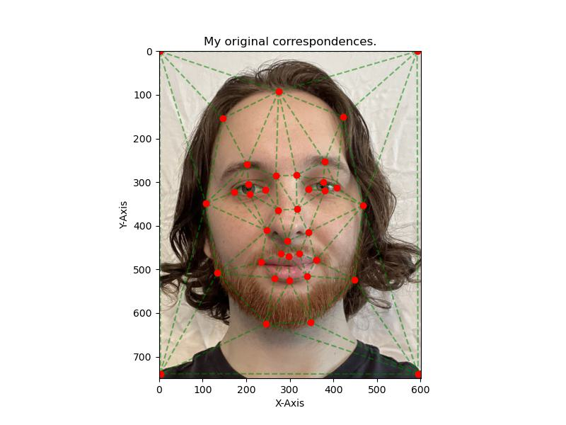 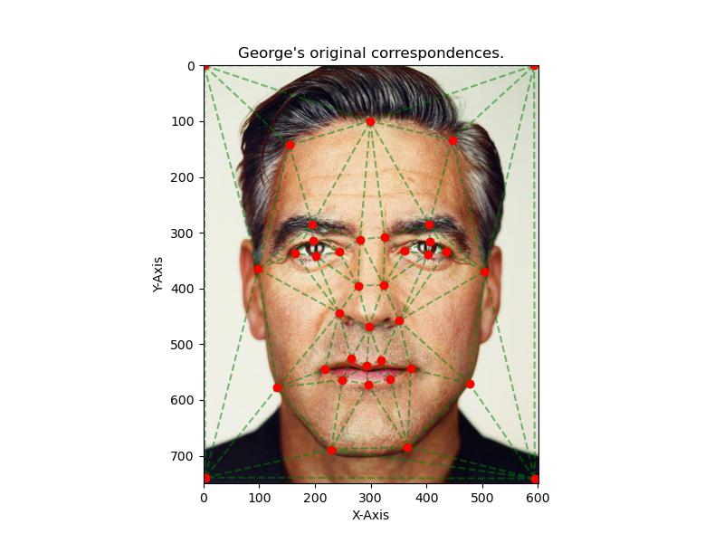Most of the work of the project was done in this part. Getting the following result required creating the computeAffine() function and figuring out how to use the scipy.spatial.polygon() function. My first implementation used polygon2Mask(), which ended up being less efficient. I had some problems along the way with various issues, including but not limited to getting my coordinates mixed up.
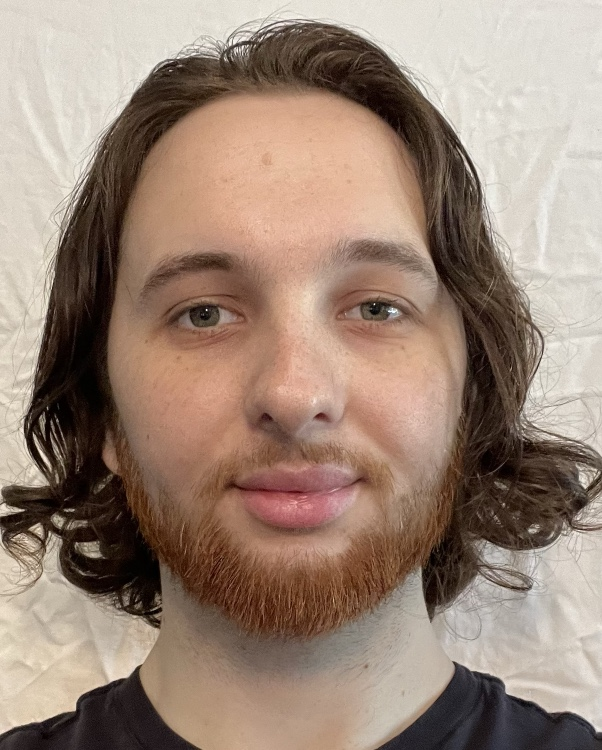 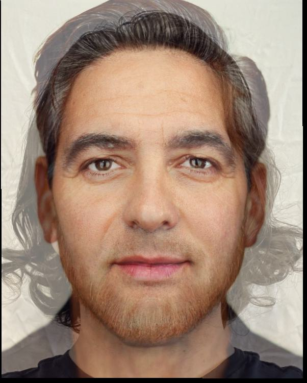
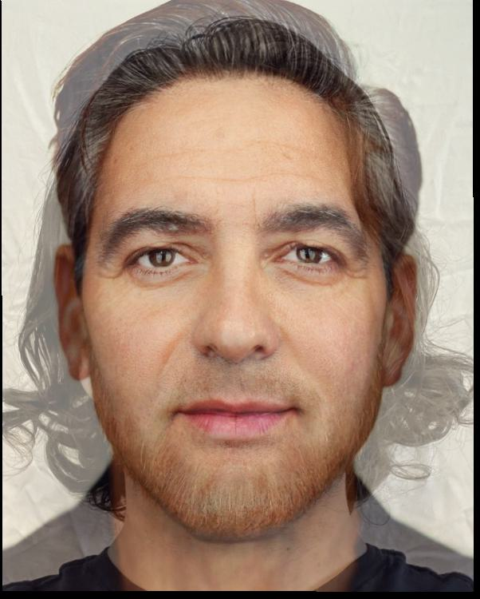
Computing the morph sequence wasn't that bad once I had a single image inverse warp working well. The main challenge I faced in
part 3 was a conceptual one. I had a hard time understanding the interpolation of points at first. Initially I thought we needed
to someone interpolate the points of the triangulation, but we just needed to find the weighted average of the actual
correpsondance points and then do the inverse warp from those interpolated points.
I also had some issues with efficiency. My first implementation took ~49 seconds to compute a single frame of morph().
Once I vectorized the interpolation step, the runtime reduced to 0.3 seconds! This massively increased my ability to do this project,
and was a necessary improvement before moving on to the subsequent steps.

In this part the biggest challenge was this distortion effect happening around my face.
As you can see, warping my face to the average dane shape had some strange side effects. I experimented with
techniques to reduce this distortion happening around the face. I added extra points to the sides of the image, for example.
I'm not sure how to improve it any futher. I had a feeling that the triangulation was the main problem, since as you can see,
the triangulation has lots of skinny triangles beceause of the way the data is setup. This, combined with the differing aspect
ratios of the images caused the distortion you see around my and george's faces.
The saving grace of my results is that the actual center of the image, the face itself, is a pretty good warp. I just wish
the rest of the image wasn't so goofy.
The average Dane warped to my and George's faces isn't that bad. It's a bit blurry but that's to be expected since the
average Dane is a bit blurry on its own.
 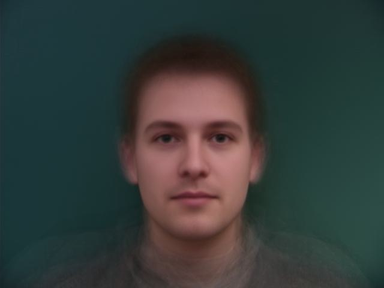
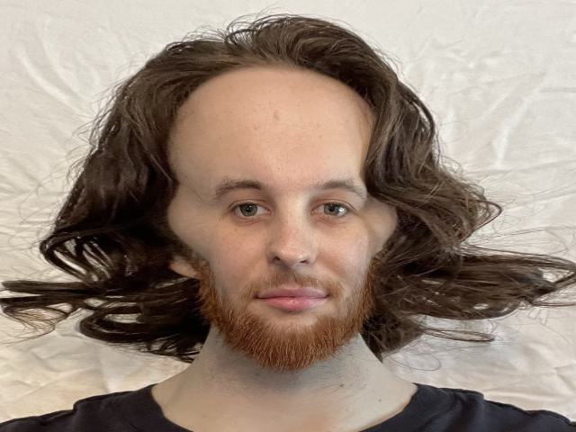
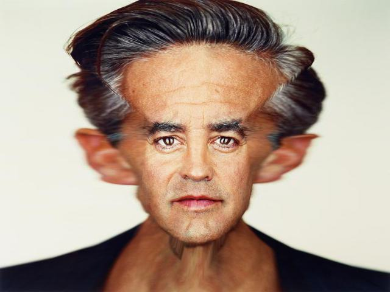
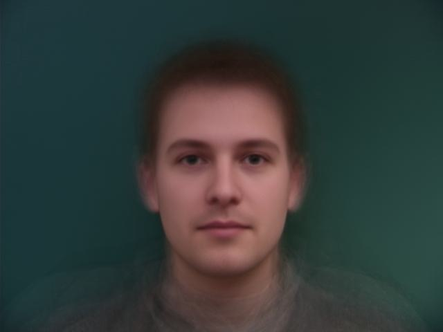
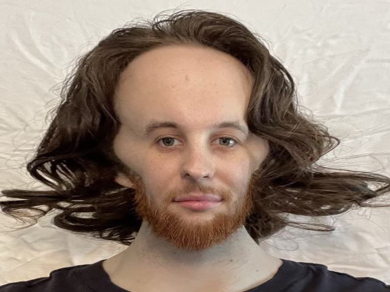
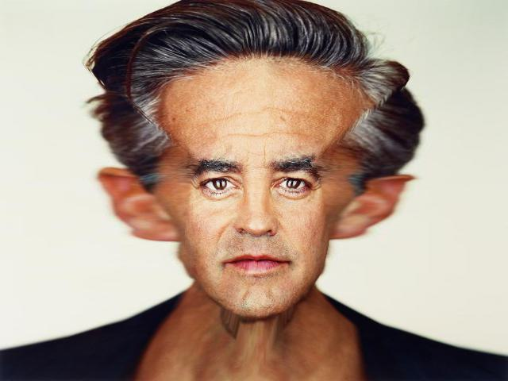
 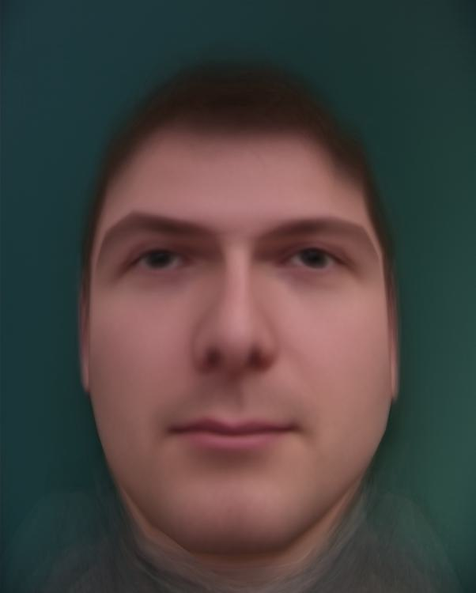
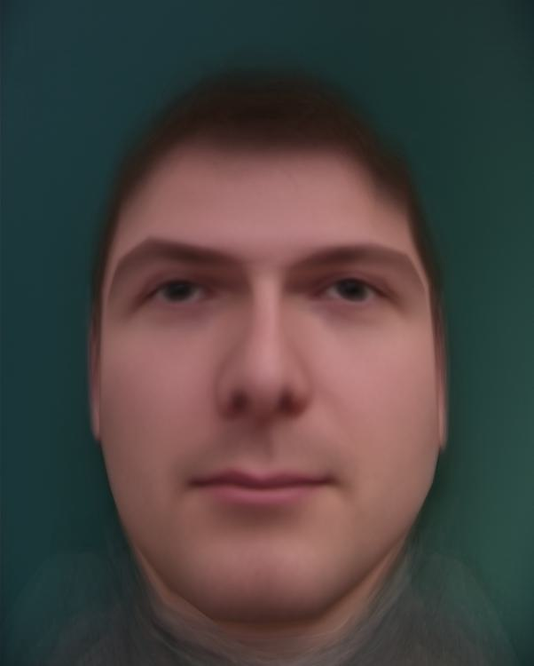
Clearly the caricutures were a bit of a failure here. I believe the main reason for this
is the fact that triangulations were not well matched up. In fact, due to the way that the
Danes' dataset was setup, there are many long, skinny triangles in the triangulation. Basically,
the problem I had in part 4 is exacertbaed here, since we are extrapolating i.e. increasing the warping.
Also, some black bars appeared here and I'm still not sure why after debugging this for four hours, but I know it
has something to do with the sizes of the images being mismatched. I wish I could have left these caricitures in a more complete
state, but unfortunately I'm out of time.
Regardless, the carictures are pretty funny. I look like some kind of ogre and George looks like megamind.
As you can see, the triangulation is not very good. I tried adding points to the sides of the image to disperse the triangles, but this didn't help much.
For this, I computed the morph sequence of from each Dane to the next in order. The gif is sped up for brevity. The resulting gif was too large to upload to GradeScope, so I uploaded it to google drive and linked it below. (sorry about that) Link to gif

I learned a ton from this project. It's probably the hardest and most fun project I've done in college yet.
I regret not being able to perfect the morph, specifically for images that are of different shape, size
and alignment. I'm still very happy with what I built and the process of taking on such an open ended project
like this is far more rewarding than when the tasks are well defined.
Thanks for reading!
- Julian